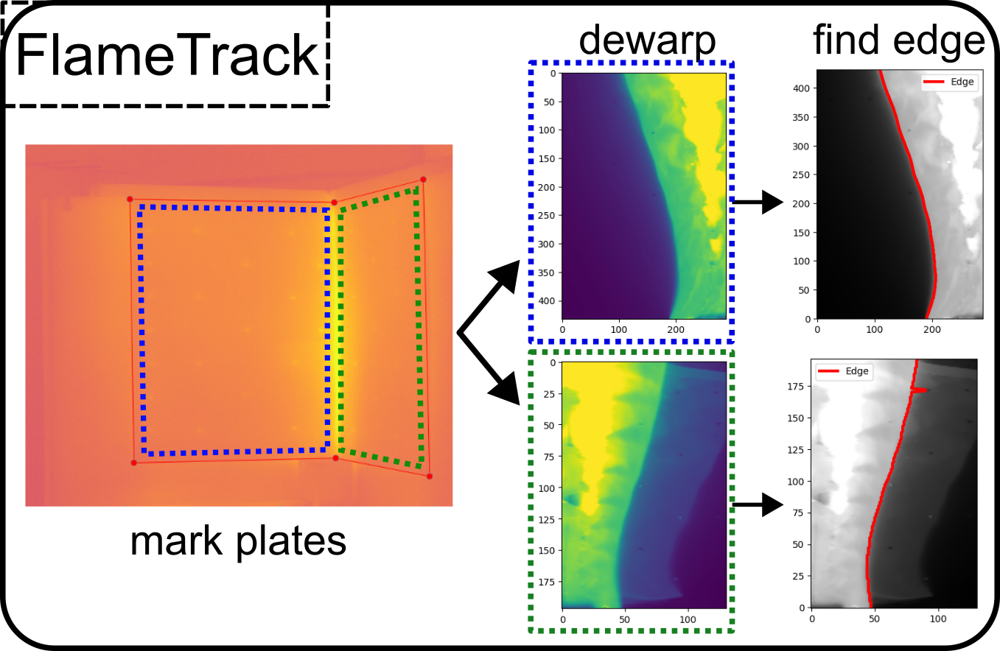
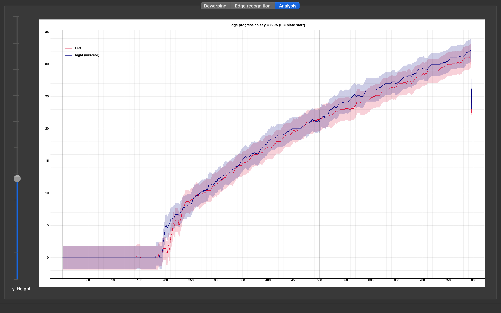

Workflows¶
Room Corner Experiment¶
A room corner test measures fire spread across two perpendicular wall panels.
Set
experiment_folderinconfig.iniand launch FlameTrackSelect Room Corner as experiment type
Load the experiment folder
Place 6 calibration points — 3 on the left panel, 3 on the right
Enter plate dimensions and click Dewarp
Click Find Edge — both panels are processed in parallel
Results are stored in the HDF5 file (see below)
Lateral Flame Spread¶
A lateral flame spread test measures horizontal fire spread on a single panel.
Load the experiment folder
Select Lateral Flame Spread
Place 4 corner points on the specimen plate
Enter plate dimensions and click Dewarp
Select flame direction and click Find Edge
Results are stored in the HDF5 file (see below)
Output Format¶
All results are saved to an HDF5 file in the processed_data/ sub-folder
of the experiment directory.
Lateral Flame Spread
File: <experiment_name>_results_RCE.h5
<experiment_name>_results_RCE.h5 (root attributes below)
│ flametrack_version e.g. "1.0.0"
│ flametrack_commit e.g. "a3f9c12"
│ plate_width_mm
│ plate_height_mm
├── dewarped_data/
│ ├── data float32 array (frames, H, W)
│ └── attrs: transformation_matrix, plate_width_mm, plate_height_mm, …
└── edge_results/
└── data int array (frames, H)
edge x-position per row per frame
Room Corner
File: <experiment_name>_results_RCE.h5
<experiment_name>_results_RCE.h5
│ flametrack_version / flametrack_commit
│ plate_width_mm_left / plate_height_mm_left
│ plate_width_mm_right / plate_height_mm_right
├── dewarped_data_left/
│ ├── data float32 array (frames, H, W)
│ └── attrs: transformation_matrix, …
├── dewarped_data_right/
│ └── …
├── edge_results_left/
│ └── data int array (frames, H)
└── edge_results_right/
└── data int array (frames, H)
{kind=link}

Room Corner experiment: calibration points on the raw IR frame (left), dewarped panels with detected edges for left and right wall (right).¶
{kind=link}

Analysis view for the same experiment: flame edge position over time. Left panel (red) and right panel (blue, mirrored) with confidence band.¶
Reading results in Python¶
import h5py
import numpy as np
with h5py.File("my_experiment_results_RCE.h5", "r") as f:
print(f.attrs["flametrack_version"]) # version used for analysis
edge = f["edge_results"]["data"][:] # shape: (frames, rows)
dewarped = f["dewarped_data"]["data"] # lazy HDF5 dataset
# edge[t, y] = x-position of the flame edge at row y in frame t
# -1 indicates no edge detected for that row/frame